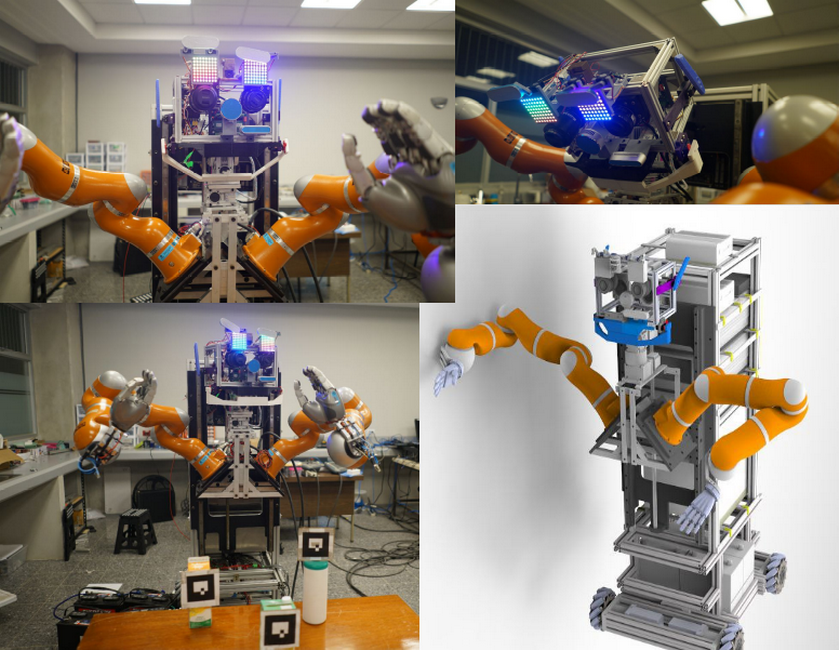
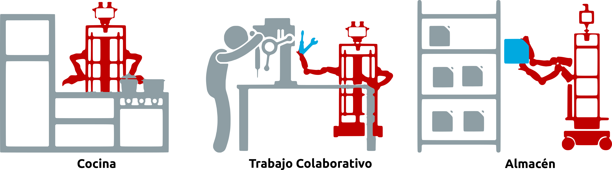
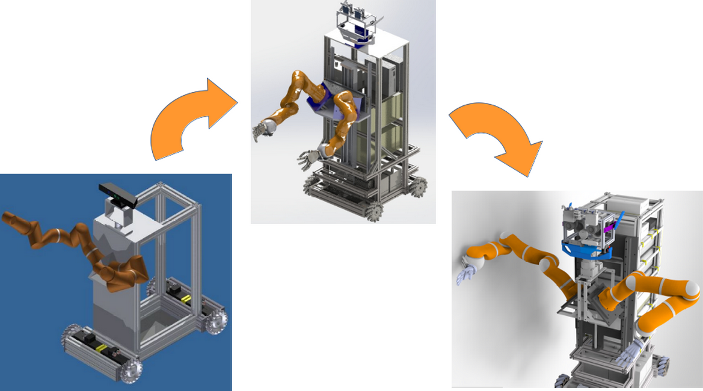
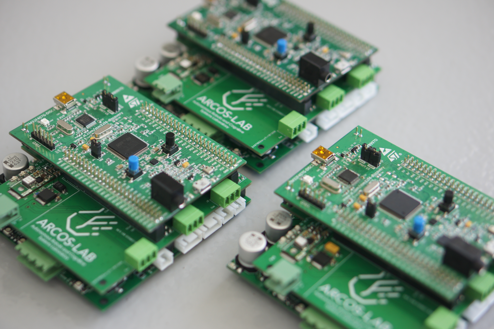
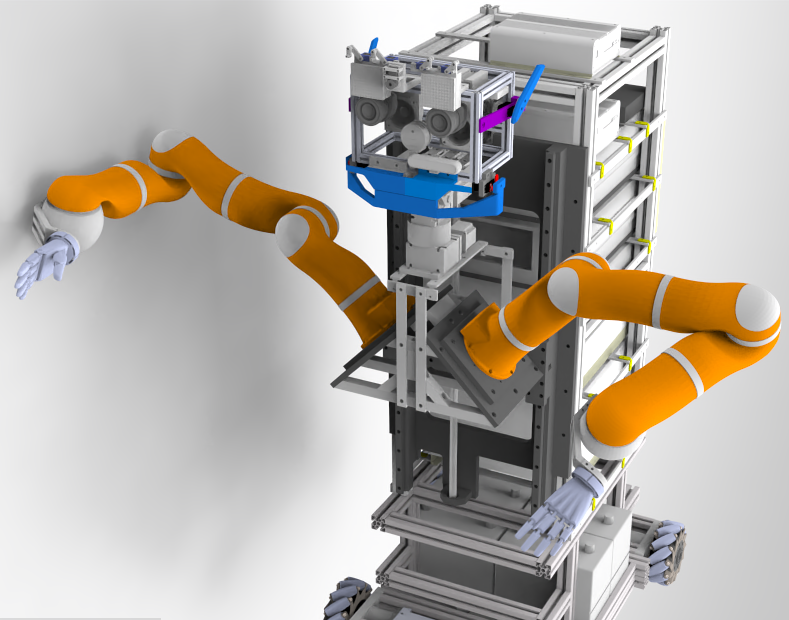
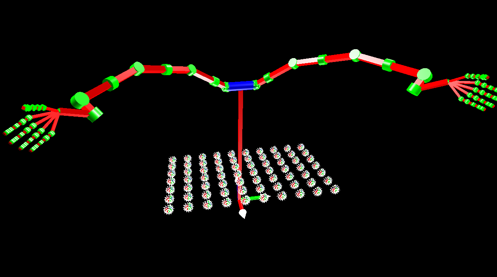
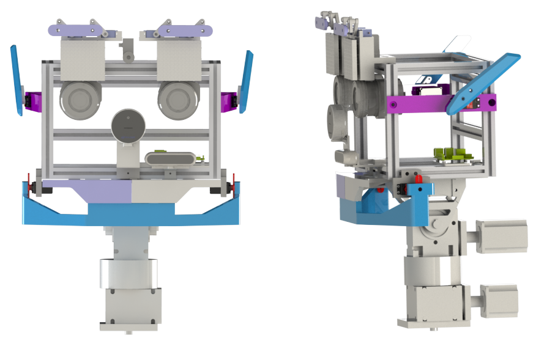
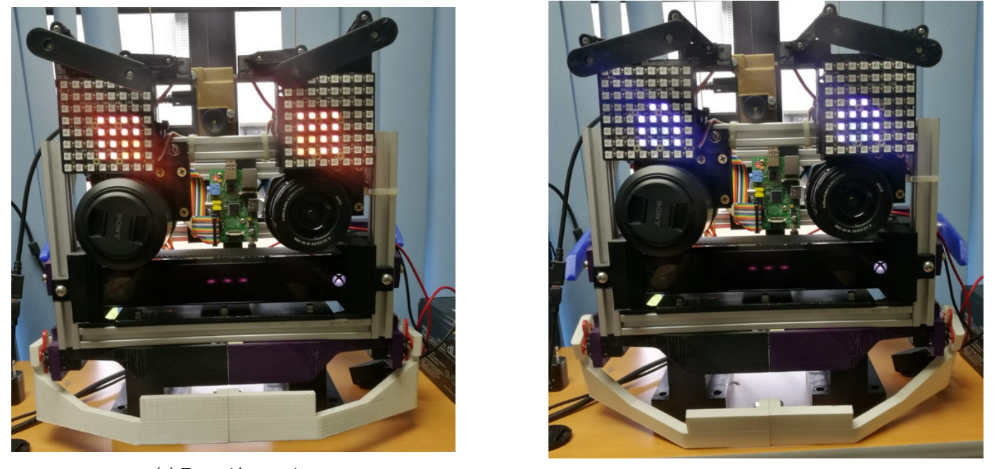
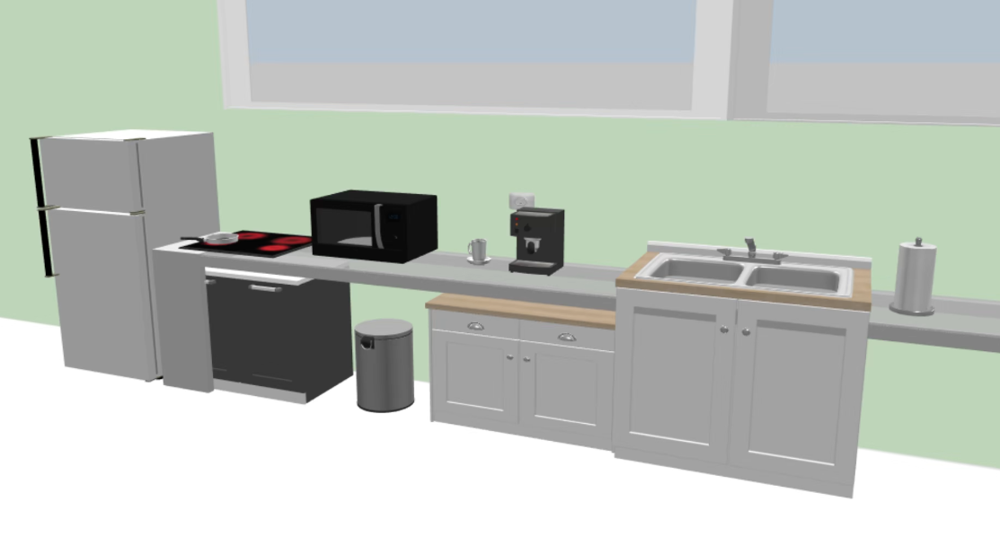

<style> .reveal section img { background:none; border:none; box-shadow:none; } #left { margin: 10px 0 15px 20px; text-align: center; float: left; z-index:-10; width:48%; font-size: 0.85em; line-height: 1.5; } #right { margin: 10px 0 15px 0; float: right; text-align: center; z-index:-10; width:48%; font-size: 0.85em; line-height: 1.5; } </style> ## Desarrollo del robot humanoide del ARCOS-Lab <br /> <span style="font-size: 25.0pt; "> **Semana de Ingeniería y Arquitectura 2022** </span> <span style="font-size: 16.0pt;"> **Expositor:** Ing. Israel Chaves Arbaiza, EIM </span> <br /> --- ## <span style="font-size: 22.0pt; ">  </span> --- ## Problemática <span style="font-size: 25.0pt; "> <br /> * Manipular múltiples y distintos objetos * Desempeñarse en entornos humanos * Asistir a las personas en sus tareas cotidianas </span> --- ## ¿Qué existe actualmente? <span style="font-size: 22.0pt; "> </span> --- ## Rollin' Justin robot de la DLR, Alemania <span style="font-size: 20.0pt; "> <iframe width="800" height="400" src="images/justin.mp4" title="Video player" frameborder="0" allow="accelerometer; autoplay; clipboard-write; encrypted-media; gyroscope; picture-in-picture" allowfullscreen></iframe> </span> --- ## Boxy robot del IAI, Alemania <span style="font-size: 20.0pt; "> <iframe width="800" height="400" src="images/rosie.mp4" title="Video player" frameborder="0" allow="accelerometer; autoplay; clipboard-write; encrypted-media; gyroscope; picture-in-picture" allowfullscreen></iframe> </span> --- ## Escenarios de nuestro robot <span style="font-size: 22.0pt; "> <br /> <br />  </span> --- ## Proceso de diseño del humanoide <span style="font-size: 22.0pt; ">  </span> --- ## Plataforma móvil omnidireccional <span style="font-size: 20.0pt; "> * Ruedas *Mecanum* para reducir la fricción * Contiene la circuitería de control de potencia del robot * Articulación rotacional en el eje trasero * Tarjetas de control propias con OpenCoRoCo <img align="left" width="500" height="400" src="media/arcosbot_base.png">  </span> --- ## Torso <span style="font-size: 20.0pt; "> * Sistema de tornillo sin fin para subir y bajar los "hombros" y la cabeza * Diseño de los "hombros", obtenido mediante simulación * Cuenta con 2 brazos KUKA LWR4+ y dos manos DLR HIT II * Contiene las computadoras de cada subsistema del robot   </span> --- ## Brazos y manos <span style="font-size: 20.0pt; "> * Brazos desarrollados en conjunto entre la DLR y KUKA * 7 grados de libertad c/u * Manos con 5 dedos c/u * Tanto los brazos como las manos poseen **control suave** <img align="left" width="450" height="300" src="media/arm_clean.png"> <img align="right" width="300" height="300" src="media/hand_clean.png"> </span> --- ## Control suave <span style="font-size: 20.0pt; "> <iframe width="800" height="400" src="images/impedance_control.mp4" title="Video player" frameborder="0" allow="accelerometer; autoplay; clipboard-write; encrypted-media; gyroscope; picture-in-picture" allowfullscreen></iframe> </span> --- ## Cuello y cabeza <span style="font-size: 20.0pt; "> * Cuello con sistema *pan-tilt* * Cabeza con dos sensores *RealSense* * Dos lentes profesionales *Sony* * Una cámara térmica  </span> --- ## Cara emocional <span style="font-size: 20.0pt; "> * Dos matrices LED como "ojos" * Orejas laterales y mandíbula * Capacidad de mostrar distintas emociones * Teoría del color relacionada a las emociones  </span> --- ## Resultados <span style="font-size: 20.0pt; "> **Experimentos realizados con el sistema OMS del ARCOS-Lab, para la conferencia Humanoids-2020** <iframe width="800" height="400" src="images/pushing.mp4" title="Video player" frameborder="0" allow="accelerometer; autoplay; clipboard-write; encrypted-media; gyroscope; picture-in-picture" allowfullscreen></iframe> </span> --- ## Trabajo actual y futuro <span style="font-size: 20.0pt; "> * **Control suave** a la base móvil * Integración de cada subsistema con la arquitectura de software * Finalización de las conexiones eléctricas * Creación de una carcasa a modo de piel * Integración del robot con la **cocina inteligente** <img align="left" width="450" height="400" src="media/open-coroco-galga.png">  </span> --- ## <span style="font-size: 20.0pt; "> ### Preguntas <br /> * www.arcoslab.org / www.arcoslab.ucr.ac.cr * https://www.facebook.com/ArcosLab <br /> <br /> <img width="600" height="200" src="media/arcos_logo.png"> </span>